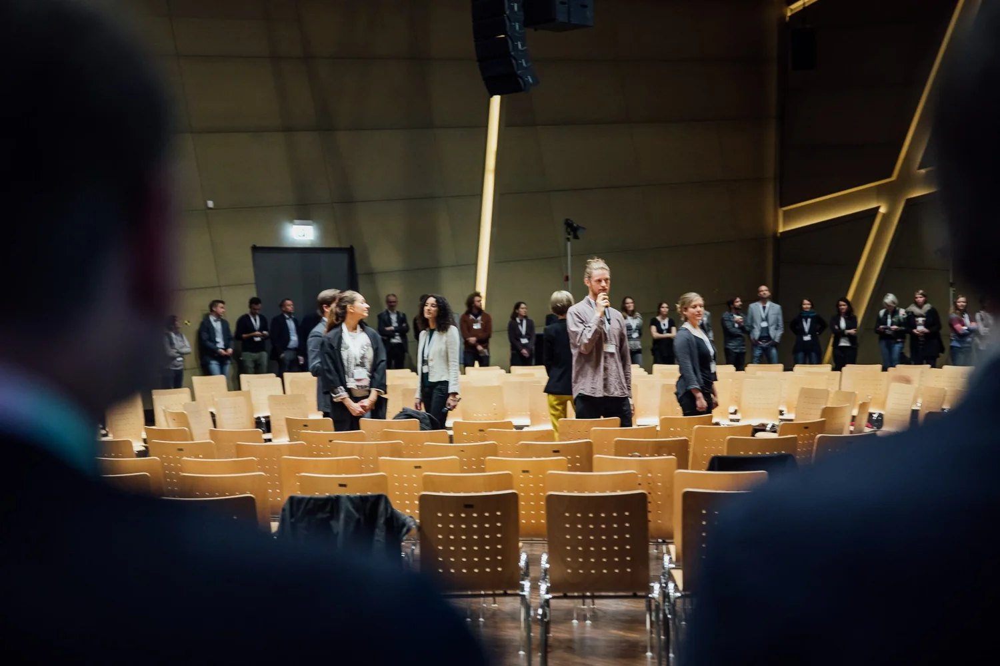

Projektgalerie
Projekte aus Freiburg, München und darüber hinaus
Graphic Recording, Generative Scribing und Facilitation bei Konferenzen, Workshops und Teamprozessen.

JobRad München
„Visualisierung schafft eine gemeinsame Sprache für Veränderung“

sustainable AG Teamentwicklung
„Kollektive Formate machen Teamkultur spürbar und lebendig.“

Visualisierungsworkshop Freiburg VHS
„Jeder Mensch kann zeichnen – und dadurch sichtbar machen, was wirkt.“

Junges Führungskolleg Freiburg Schauinsland
„Führung beginnt mit Selbstführung und Zuhören.“

Utopie-Konferenz
„Utopien werden lebendig, wenn wir sie gemeinsam gestalten und sichtbar machen.“

Siepmann Werke Führungsteam Entwicklung
„Werte werden stark, wenn Menschen sie selbst gestalten und leben.“

Konferenz: Bildung und Schule & Digitalisierung
„Wenn Zukunft von Bildung sichtbar wird, entsteht Resonanz und Mut zum Wandel.“
Neues Projekt (Platzhalter)
Hier erscheint das nächste Projekt: Titel, Ort, Bilder und ein kurzer Text.
Neues Projekt (Platzhalter)
Hier erscheint das nächste Projekt: Titel, Ort, Bilder und ein kurzer Text.